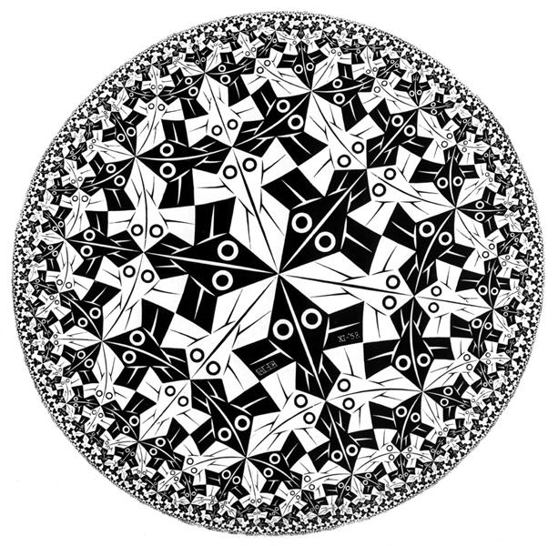
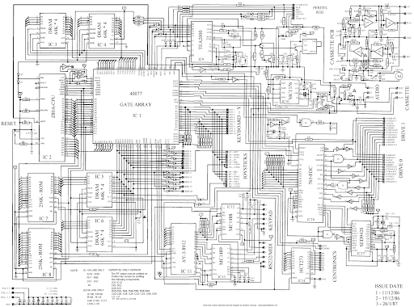
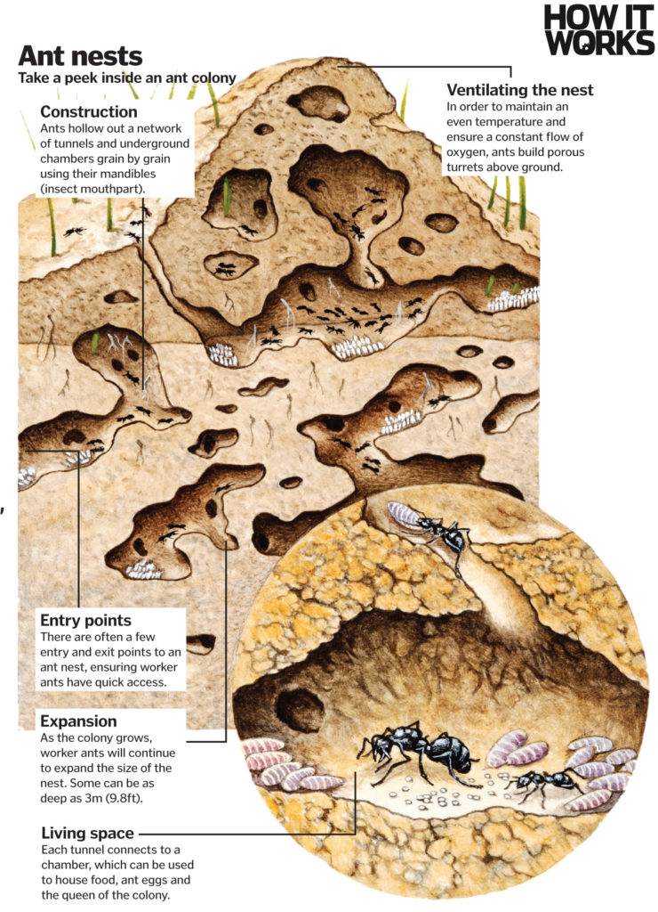
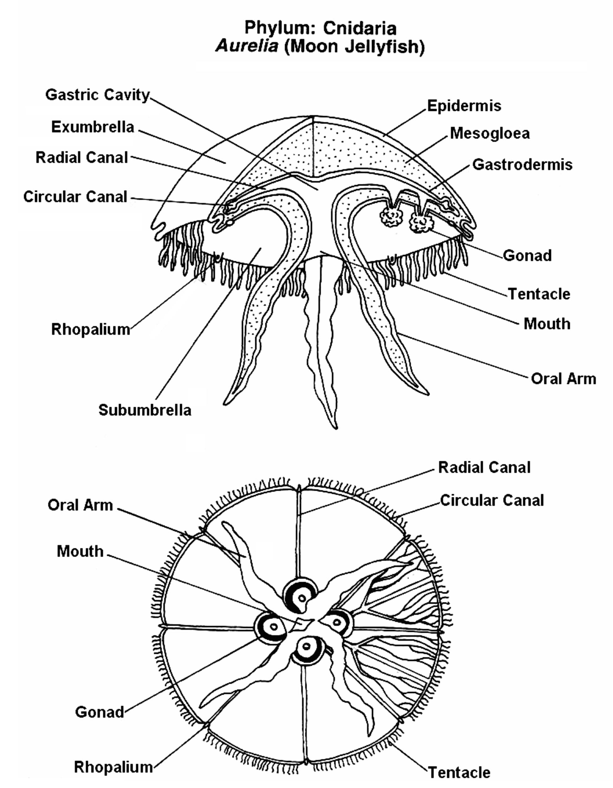

Reading 1
Q1. What is a good working definition of what a System is and perhaps what it is not?
A system consists of groups of activities or parts interacting frequently or interdependently forming a whole. It's not a system when activities or parts are not interacting as a whole.
Q2. For the 4 system definitions you were to look up please give in your own words what they mean and give an example of them for each case.
_ Modularity: Parts of a system can be arranged in many different configurations or roles.
Ex:Computer parts
_ Decomposability: have functional limited, will cause destructive if break down.
Ex: beehives, ant nest
_ Emergence: A complex behavior arises from a variety of relatively simple interactions from many components.
Ex: flock of birds, traffic jam
_ Chaos Theory: The behavior of dynamic systems is very sensitive to initial conditions and can have a wide range of results and still work in larger systems that maintain balance.
Ex: weather system
Q3. Give us your definition of what Tessellation means and give an example you encountered, not mentioned in the reading.
A same shape or form being repetitive in either the same or different side and scale without any gap or overlap, similar to Mosaic pattern
Ex: Circle Limit I, 1958 - M.C. Escher
Q4. What is The difference between ideas of Modularity and Tessellation? What are the properties that are in opposition with each other?
_ Modularity: can have variety shape and form, more flexible.
_ Tessellation: everything is fix, will break if a part is moved.
Q5. What is the difference between designing something that has Complexity (aperiodic) vs being Uniform (periodic)?
_ Periodic (uniform): repeat the tile or a motif in two separate directions forever.
_ Aperiodic (complexity): no translation symmetry and the pattern cannot be repeated periodically only covering a portion of the plane
Q6. 4 diagrams that show evidence of Modularity, Decomposibilty, Emergence and Chaos Theory
Modularity - One diagram must have more than 100 elements and One diagram must be a system based on modularity
Decomposibility - One diagram must be represent something that is not visible or physical
Emergence - One diagram must be something considered living

Chaos Theory - One diagram must be represent something that is not visible or physical